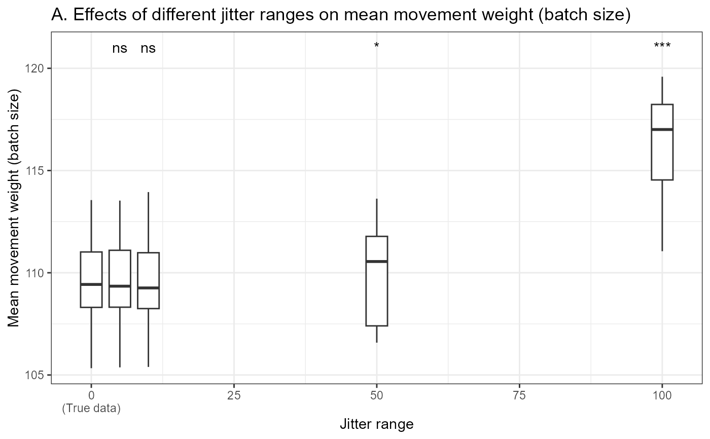
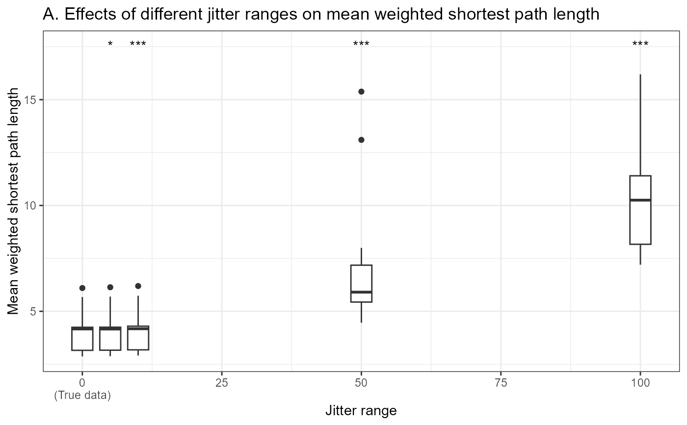
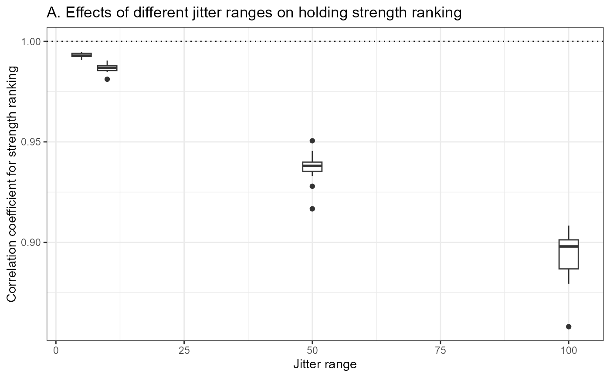
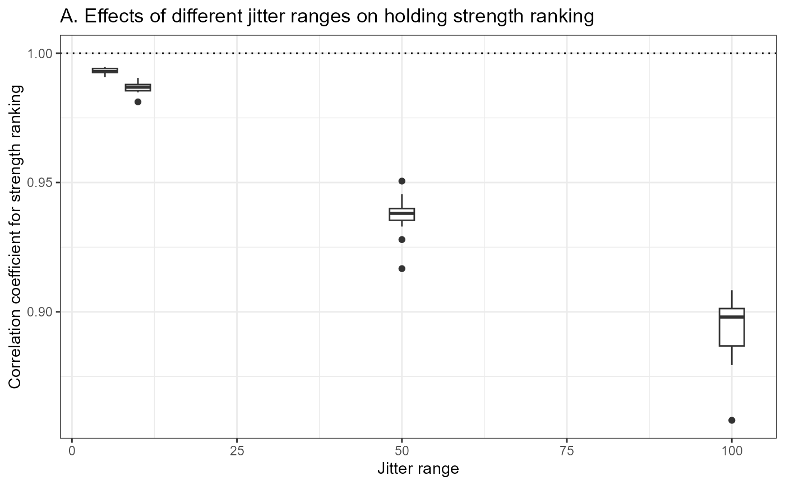

Create a report analysing the effects of modifying movement weights on network properties
create_anonymisation_effect_analysis_report.Rdcreate_anonymisation_effect_analysis_report() takes as input a livestock
movement dataset, and analyses how network analyses of these data are
affected by privacy-enhancing modifications (jittering or rounding) of
movement weights. The function creates an html report with visualisations of
the effects of different amounts of jittering and rounding on a selection of
epidemiologically relevant global network properties as well as on the
ranking of holdings according to various centrality measures. The aim is to
help livestock movement data managers and analysts find an appropriate
balance between data privacy and their utility in network analyses.
Usage
create_anonymisation_effect_analysis_report(
movement_data,
output_file,
modify_weights = TRUE,
modify_dates = FALSE,
n_jitter_sim = 3,
time_unit = "28 days",
data_reference = NULL,
verbose = FALSE
)Arguments
- movement_data
A movenet-format movement tibble.
- output_file
Output file name and path. If no path is provided, the file will be saved in the current working directory.
- modify_weights
A logical indicating whether to analyse the effects of modifying weights (default
TRUE). Currently this MUST beTRUEfor the function to proceed.- modify_dates
Does not currently do anything as analysis of modified dates is not yet implemented (automatically set to
FALSE).- n_jitter_sim
An integer indicating the number of random jitter simulations (default
3).- time_unit
A character string indicating the time unit of analyses (default
"28 days"). The overall movement data will be split into sub-networks based on this time unit.- data_reference
A character string providing an optional subtitle to the report, e.g. an identifier for the original movement dataset (default
NULL).- verbose
A logical indicating whether to print progress messages (default
FALSE).
Value
An html report file is created with text and visualisations comparing the effects of movement weight modifications (different amounts of jittering and rounding) on a selection of global network properties and on the ranking of holdings according to several centrality measures.
Details
This function applies various privacy-enhancing modifications to the
provided movement_data, converts the resulting datasets into series of
static networks for each period of the specified time_unit, and then
provides users with a report with network analyses comparing the true data
with the modified data.
This function requires that an appropriate movement config file is loaded,
to correctly identify the weight column in movement_data.
Prior to applying privacy-enhancing modifications, movement_data is
pre-processed: repeated movements between the same holdings on the same day
are aggregated, and self-moves and moves with weight 0 are removed.
Privacy-enhancing modifications include the modification of movement
weights (batch sizes) by jittering and rounding. For jittering, the
function jitter_weights() is used, with jitter ranges of 5, 10, 50, ...
up until the order of magnitude of the mean movement weight in the data.
For rounding, the function round_weights() is used, with rounding units
of 5, 10, 50, ... up until the order of magnitude of the largest movement
weight in the data.
The periodic movement networks from true and modified networks are compared with regards to two epidemiologically relevant weighted global network properties: mean weighted shortest path length, and strength assortativity. Additionally, comparisons are made with regards to the relative ranking of holdings according to three weighted centrality measures: strength (geometric mean of in- and out-strength), betweenness, and PageRank.
See also
Other Privacy-enhancing functions:
anonymise(),
jitter_dates(),
jitter_weights(),
round_dates(),
round_weights()
Examples
# Set-up: Save movenet environment with current configurations
movenetenv <- movenet:::movenetenv
old_config <- movenetenv$options
# Load a movement config file
load_config(system.file("configurations", "ScotEID.yml",
package = "movenet"))
#> Successfully loaded config file: C:/Users/cboga/AppData/Local/Temp/RtmpgnjGPN/temp_libpath4a401eb67cc9/movenet/configurations/ScotEID.yml
# Create a report analysing the effects of modifying movement weights
create_anonymisation_effect_analysis_report(example_movement_data,
file.path(tempdir(), "mod_weight_analysis.html"),
modify_weights = TRUE,
modify_dates = FALSE,
n_jitter_sim = 3,
time_unit = "28 days",
data_reference = "Example dataset",
verbose = TRUE)
#> Processing movement data...
#> Jittering movement weights...
#> Rounding movement weights...
#> Creating static networks for true data...
#> Creating static networks for data with modified weights...
#> Calculating and plotting: mean movement weights...
#> Warning: cannot compute exact p-value with zeroes

#> Calculating and plotting: mean distances...

#> Calculating and plotting: strength assortativity...
 #> Calculating, ranking and plotting: holding strengths...

#> Calculating, ranking and plotting: holding PageRanks...
#> Calculating, ranking and plotting: holding strengths...

#> Calculating, ranking and plotting: holding PageRanks...
 #> Calculating, ranking and plotting: holding betweenness...
#> Creating report...
#>
#>
#> processing file: anonymisation_effect_analysis.Rmd
#> 1/36
#> 2/36 [set-up]
#> 3/36
#> 4/36 [weights-and-or-dates]
#> 5/36
#> 6/36 [unnamed-chunk-1]
#> 7/36 [movement-weights]
#> 8/36
#> 9/36 [unnamed-chunk-2]
#> 10/36 [mean-distance]
#> 11/36
#> 12/36 [unnamed-chunk-3]
#> 13/36 [strength-assortativity]
#> 14/36
#> 15/36 [unnamed-chunk-4]
#> 16/36 [strength]
#> 17/36
#> 18/36 [unnamed-chunk-5]
#> 19/36 [betweenness]
#> 20/36
#> 21/36 [unnamed-chunk-6]
#> 22/36 [page-rank]
#> 23/36
#> 24/36 [weight-modifications]
#> 25/36
#> 26/36 [date-modifications]
#> 27/36
#> 28/36 [static-networks]
#> 29/36 [temporal-networks1]
#> 30/36
#> 31/36 [static-network-methods-1]
#> 32/36
#> 33/36 [weighted-network-methods-2]
#> 34/36
#> 35/36 [temporal-network-methods-2]
#> 36/36
#> output file: anonymisation_effect_analysis.knit.md
#> "C:/Program Files/RStudio/resources/app/bin/quarto/bin/tools/pandoc" +RTS -K512m -RTS anonymisation_effect_analysis.knit.md --to html4 --from markdown+autolink_bare_uris+tex_math_single_backslash --output pandoc50809ad5ace.html --lua-filter "C:\Users\cboga\Documents\R\win-library\4.1\bookdown\rmarkdown\lua\custom-environment.lua" --lua-filter "C:\Users\cboga\Documents\R\win-library\4.1\rmarkdown\rmarkdown\lua\pagebreak.lua" --lua-filter "C:\Users\cboga\Documents\R\win-library\4.1\rmarkdown\rmarkdown\lua\latex-div.lua" --metadata-file "C:\Users\cboga\AppData\Local\Temp\Rtmpg3kOYf\file508057d76091" --embed-resources --standalone --wrap preserve --variable bs3=TRUE --section-divs --template "C:\Users\cboga\Documents\R\win-library\4.1\rmarkdown\rmd\h\default.html" --no-highlight --variable highlightjs=1 --variable theme=bootstrap --mathjax --variable "mathjax-url=https://mathjax.rstudio.com/latest/MathJax.js?config=TeX-AMS-MML_HTMLorMML" --include-in-header "C:\Users\cboga\AppData\Local\Temp\Rtmpg3kOYf\rmarkdown-str508030765384.html" --citeproc
#>
#> Output created: C:\Users\cboga\AppData\Local\Temp\Rtmpg3kOYf/mod_weight_analysis.html
# Clean-up: Reinstate previous configurations and remove temporary objects
movenetenv$options <- old_config
rm("old_config", "movenetenv")
file.remove(file.path(tempdir(), "mod_weight_analysis.html"))
#> [1] TRUE
#> Calculating, ranking and plotting: holding betweenness...
#> Creating report...
#>
#>
#> processing file: anonymisation_effect_analysis.Rmd
#> 1/36
#> 2/36 [set-up]
#> 3/36
#> 4/36 [weights-and-or-dates]
#> 5/36
#> 6/36 [unnamed-chunk-1]
#> 7/36 [movement-weights]
#> 8/36
#> 9/36 [unnamed-chunk-2]
#> 10/36 [mean-distance]
#> 11/36
#> 12/36 [unnamed-chunk-3]
#> 13/36 [strength-assortativity]
#> 14/36
#> 15/36 [unnamed-chunk-4]
#> 16/36 [strength]
#> 17/36
#> 18/36 [unnamed-chunk-5]
#> 19/36 [betweenness]
#> 20/36
#> 21/36 [unnamed-chunk-6]
#> 22/36 [page-rank]
#> 23/36
#> 24/36 [weight-modifications]
#> 25/36
#> 26/36 [date-modifications]
#> 27/36
#> 28/36 [static-networks]
#> 29/36 [temporal-networks1]
#> 30/36
#> 31/36 [static-network-methods-1]
#> 32/36
#> 33/36 [weighted-network-methods-2]
#> 34/36
#> 35/36 [temporal-network-methods-2]
#> 36/36
#> output file: anonymisation_effect_analysis.knit.md
#> "C:/Program Files/RStudio/resources/app/bin/quarto/bin/tools/pandoc" +RTS -K512m -RTS anonymisation_effect_analysis.knit.md --to html4 --from markdown+autolink_bare_uris+tex_math_single_backslash --output pandoc50809ad5ace.html --lua-filter "C:\Users\cboga\Documents\R\win-library\4.1\bookdown\rmarkdown\lua\custom-environment.lua" --lua-filter "C:\Users\cboga\Documents\R\win-library\4.1\rmarkdown\rmarkdown\lua\pagebreak.lua" --lua-filter "C:\Users\cboga\Documents\R\win-library\4.1\rmarkdown\rmarkdown\lua\latex-div.lua" --metadata-file "C:\Users\cboga\AppData\Local\Temp\Rtmpg3kOYf\file508057d76091" --embed-resources --standalone --wrap preserve --variable bs3=TRUE --section-divs --template "C:\Users\cboga\Documents\R\win-library\4.1\rmarkdown\rmd\h\default.html" --no-highlight --variable highlightjs=1 --variable theme=bootstrap --mathjax --variable "mathjax-url=https://mathjax.rstudio.com/latest/MathJax.js?config=TeX-AMS-MML_HTMLorMML" --include-in-header "C:\Users\cboga\AppData\Local\Temp\Rtmpg3kOYf\rmarkdown-str508030765384.html" --citeproc
#>
#> Output created: C:\Users\cboga\AppData\Local\Temp\Rtmpg3kOYf/mod_weight_analysis.html
# Clean-up: Reinstate previous configurations and remove temporary objects
movenetenv$options <- old_config
rm("old_config", "movenetenv")
file.remove(file.path(tempdir(), "mod_weight_analysis.html"))
#> [1] TRUE